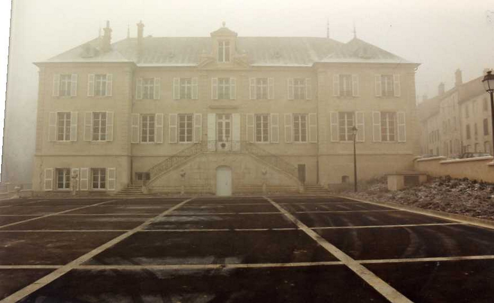
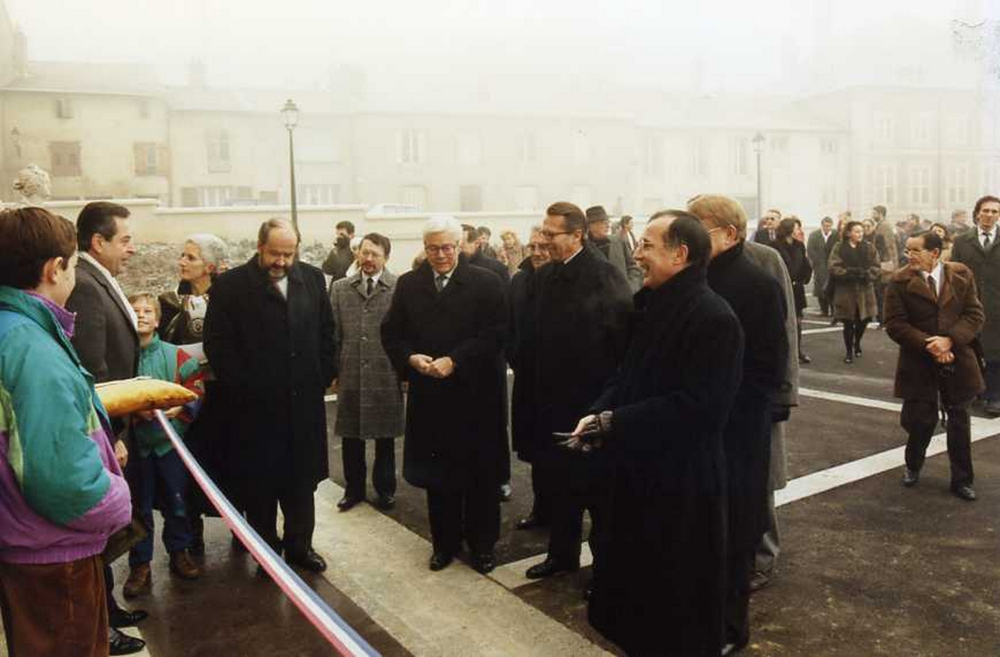
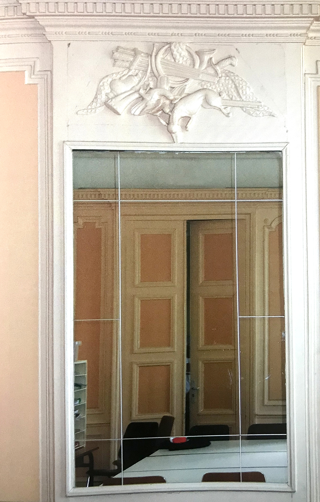

Le château Simon de Chatellus

Entrée rue Albert 1er | Fermé au public Latitude : 48.669657967250615 - Longitude : 6.145835569866904
D’après les plans de Claude-Thomas Gentillatre, acquéreur de la propriété en 1751 (également bâtisseur de plusieurs édifices dont les portes Sainte-Catherine et Stanislas à Nancy ainsi que l’arc Héré), l’édifice fut construit à côté de la maison franche édifiée au XVIe siècle par les seigneurs de Widranges. Des bâtiments de ferme devaient se situer à l’emplacement de la cour actuelle.
Le château a été acheté à Yves Guillet de Chatellus par le district urbain en 1970. Il fut un temps dénommé château de Villers. Le domaine a été amputé pour assurer d’autres constructions en 1975. Il ne reste aujourd’hui que le remarquable corps principal et le colombier.
La Ville de Villers-lès-Nancy en fit l’acquisition en 1985.
Il abrite l’école éponyme depuis 1989.
Carte
Photos





